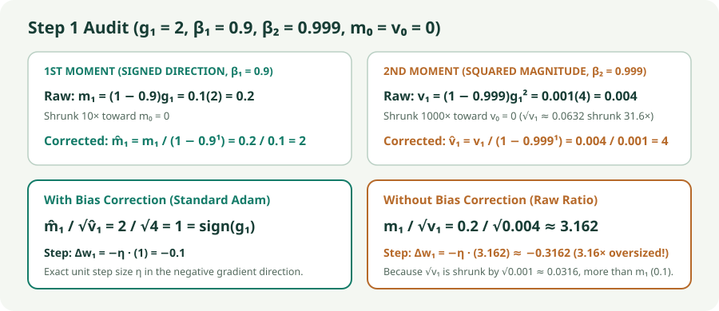

Adam: Two Memories and Bias Correction
Build Adam from its moments, understand why bias correction divides by $1-\beta^t$, and separate AdamW from L2 regularization.
Adam combines Momentum (a running average of signed gradients $m_t$) with RMSprop (a running average of squared gradients $v_t$), plus a bias correction that fixes the startup shrinkage caused by initializing both buffers at zero.
1. Two memories with different jobs
Starting from $m_0=0$ and $v_0=0$, each step $t$ updates two coordinate-wise exponential moving averages of the gradient $g_t$:
Here $m_t$ tracks direction (opposite signs cancel), while $v_t$ tracks squared magnitude (always nonnegative, typically with $\beta_1=0.9$ and $\beta_2=0.999$). Adam first bias-corrects both buffers and then takes a normalized step:
2. Why zero initialization needs bias correction
Because $m_0=0$ and $v_0=0$, the early averages are pulled heavily toward zero. On step $1$ with $\beta_1=0.9$ and $\beta_2=0.999$,
Here $m_1$ is only $10\%$ of $g_1$, and $v_1$ is only $0.1\%$ of $g_1^2$. To see the exact shrinkage at any step $t$, unroll the recurrence starting from $m_0=0$:
- Step 1: $m_1=(1-\beta_1)g_1$
- Step 2: $m_2=\beta_1m_1+(1-\beta_1)g_2=(1-\beta_1)(\beta_1g_1+g_2)$
- Step $t$: $m_t=(1-\beta_1)\bigl(\beta_1^{t-1}g_1+\beta_1^{t-2}g_2+\cdots+g_t\bigr)=(1-\beta_1)\sum_{k=1}^t\beta_1^{t-k}g_k$
In a proper weighted average, the weights on past gradients must sum to $1$. Using the geometric series $1+\beta_1+\cdots+\beta_1^{t-1}=\frac{1-\beta_1^t}{1-\beta_1}$, the weights in $m_t$ actually sum to
The missing weight $\beta_1^t$ is still sitting on $m_0=0$. So if gradients have mean $\mathbb E[g_k]=\mu$ and second moment $\mathbb E[g_k^2]=\sigma^2$, the raw buffers are biased down by $1-\beta_1^t$ and $1-\beta_2^t$:
Dividing by $1-\beta_1^t$ and $1-\beta_2^t$ cancels this factor so that $\mathbb E[\widehat m_t]=\mu$ and $\mathbb E[\widehat v_t]=\sigma^2$. As $t$ grows large, $\beta_1^t\to 0$ and $\beta_2^t\to 0$, so the denominators $1-\beta^t\to 1$ and the correction naturally fades away.

3. Audit the first update
Take one coordinate with $g_1=2$, $\beta_1=0.9$, $\beta_2=0.999$, $\eta=0.1$, and $\epsilon\approx 0$:
The update is $\Delta w_1=-0.1(2/\sqrt4)=-0.1$ (for any nonzero $g_1$, step 1 is $-\eta\operatorname{sign}(g_1)$). Without bias correction, the ratio would be $0.2/\sqrt{0.004}\approx 3.1623$, giving an oversized step of $-0.3162$ because $v_1$ was shrunk much more than $m_1$.
4. Lab: inspect what the update actually divides
On the shared quadratic dataset, toggle bias correction on and off to compare the raw moments $(m_t,v_t)$ against the corrected values $(\widehat m_t,\widehat v_t)$ used in the step.
Adam with visible moments
Turn bias correction off to run an ablation, then compare the first displacement from the same starting point.
5. Why AdamW separates weight decay
Adding an L2 penalty $\tfrac\lambda2\|w\|^2$ to the loss adds $\lambda w$ to $g_t$, which gets divided by $\sqrt{\widehat v_t}$—so parameters with large gradients get less weight decay. AdamW decouples shrinkage from the adaptive ratio:
6. Implementation
# One AdamW step (moments use only the task gradient)
t += 1
m = beta1 * m + (1 - beta1) * grad
v = beta2 * v + (1 - beta2) * grad.square()
m_hat = m / (1 - beta1 ** t)
v_hat = v / (1 - beta2 ** t)
parameter *= 1 - lr * weight_decay
parameter -= lr * m_hat / (v_hat.sqrt() + eps)7. Questions worth answering
Because $\beta_2=0.999$ shrinks the denominator $\sqrt{v_1}$ by $\sqrt{0.001}\approx 0.0316$, while $\beta_1=0.9$ only shrinks the numerator $m_1$ by $0.1$, multiplying the step by $0.1/0.0316\approx 3.16$.
No. If $m_t$ and $v_t$ are restored from the checkpoint, $t$ must also be restored so the bias correction matches the buffers.
Sources
Kingma and Ba, Adam: A Method for Stochastic Optimization; Loshchilov and Hutter, Decoupled Weight Decay Regularization; PyTorch AdamW.